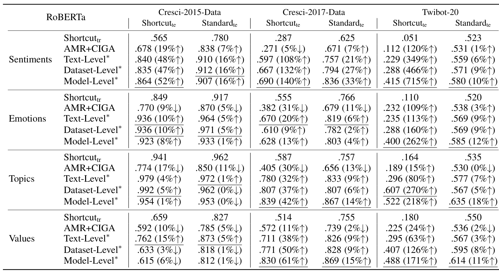

Bot Meets Shortcut: How Can LLMs Aid in Handling Unknown Invariance OOD Scenarios?
1 Xi’an Jiaotong University 2 State Key Laboratory of Communication Content Cognition
3 Beijing Institute of Technology

Click the figure to view at full resolution.
Abstract
While existing social bot detectors perform well on benchmarks, their robustness across diverse real-world scenarios remains limited due to unclear ground truth and varied misleading cues. In particular, the impact of shortcut learning, where models rely on spurious correlations instead of capturing causal task-relevant features, has received limited attention. To address this gap, we conduct an in-depth study to assess how detectors are influenced by potential shortcuts based on textual features, which are most susceptible to manipulation by social bots. We design a series of shortcut scenarios by constructing spurious associations between user labels and superficial textual cues to evaluate model robustness. Results show that shifts in irrelevant feature distributions significantly degrade social bot detector performance, with an average relative accuracy drop of 32% in the baseline models. To tackle this challenge, we propose mitigation strategies based on large language models, leveraging counterfactual data augmentation. These methods mitigate the problem from data and model perspectives across three levels, including data distribution at both the individual user text and overall dataset levels, as well as the model’s ability to extract causal information. Our strategies achieve an average relative performance improvement of 56% under shortcut scenarios.
Mitigation Methods
Leveraging the competency of LLMs in social bot detection tasks (Feng et al. 2024), we employ a counterfactual data augmentation (CDA) strategy comprising two main components: (1) At the first step, we perform CDA on the Training Set to generate texts that reverse specific biased feature while preserving the main semantic content and label criteria. (2) We mitigate shortcut-inducing correlations at three levels, including semantic patterns in the text level, skewed feature distributions in the dataset level, and embedding language model’s debiasing ability in the model level (fig. 3).
Counterfactual Data Augmentation
Specialized LLMs can identify potential superficial feature biases in training data by analyzing text patterns (e.g., clearly positive tone). Then to counteract these spurious correlations, we employ a prompt-based LLM rewriting method (using DeepSeek API (Guo et al. 2025) in our implementation) to generate counterfactual text while maintaining semantic consistency. Specifically, we prompt the model to alter the expression of specified shallow features (e.g., sentiment, human values and topic cues) without changing the core meaning and sentence structure of the original texts, while preserving the distinguishing characteristics between social bots and humans in the original texts (some examples in section E).
Text-Level Debiasing
We then combine original and rewritten texts to select a balanced subset with minimized bias.
Dataset-Level Debiasing
After obtaining the bias-mitigated texts at the user level, we also conduct dataset-level debiasing to reduce the shortcut learning between labels and superficial features.
Model-Level Mitigation
On top of getting counterfactual texts, we further fine-tune the language feature extractor using contrastive learning to enhance its ability to capture causal information.
Mitigation Methods Performance
Our strategy effectively mitigates the issue in both text-based (table 2) and graph-based settings (section G). Experimental results show that in the text-based scenario, our method achieves an average relative improvement of 59% over the original model. In the graph-based scenario, the average relative improvement reaches 53%. These results underscore the effectiveness of our strategy.

Poster

Slides

Slide 1 of 36
Rendered from the original presentation. Download the PowerPoint file.
Citation
@inproceedings{zheng2026bot,
title = {Bot Meets Shortcut: How Can LLMs Aid in Handling
Unknown Invariance OOD Scenarios?},
author = {Zheng, Shiyan and Wan, Herun and Luo, Minnan and Huang, Junhang},
booktitle = {Proceedings of the AAAI Conference on Artificial Intelligence},
volume = {40},
number = {2},
pages = {1605--1613},
year = {2026},
doi = {10.1609/aaai.v40i2.37137}
}